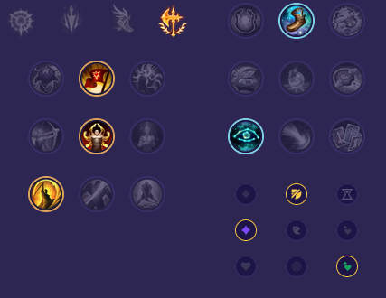

Starter: 🔵 Pisklę Podmuszka Mikstura Zdrowia Core Bulid: Moc Trójcy Pancerniaki Rozdarte Niebo Full Bulid: Czarny Tasak Anioł Stróż Gruboskórność Steraka

Słaby przeciwko: - Rammus - Rek'Sai - Volibear - Evelynn - Briar - Nunu i Willump Dobry przeciwko: - Ambessa - Kayn - Sejuani - Shaco - Kindred - Rengar